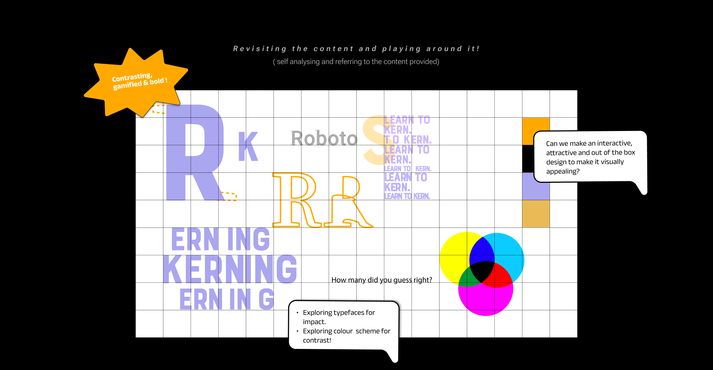
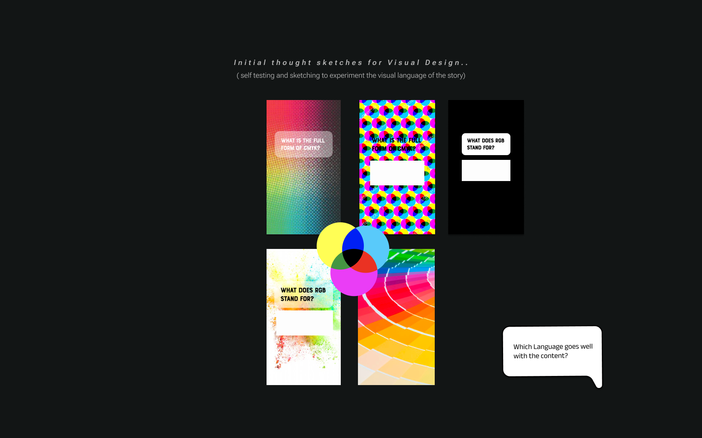
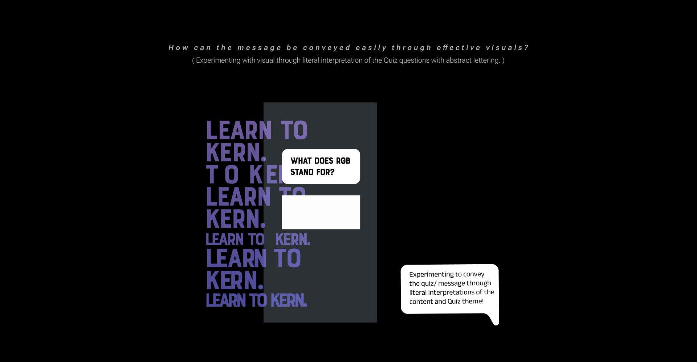
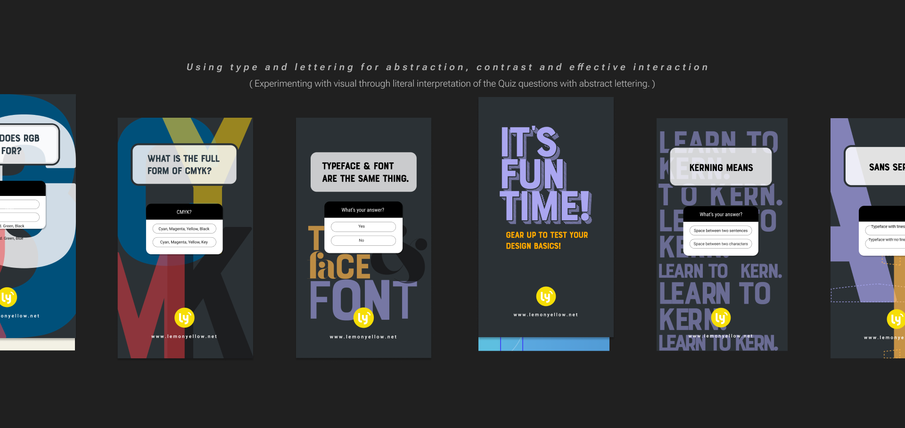
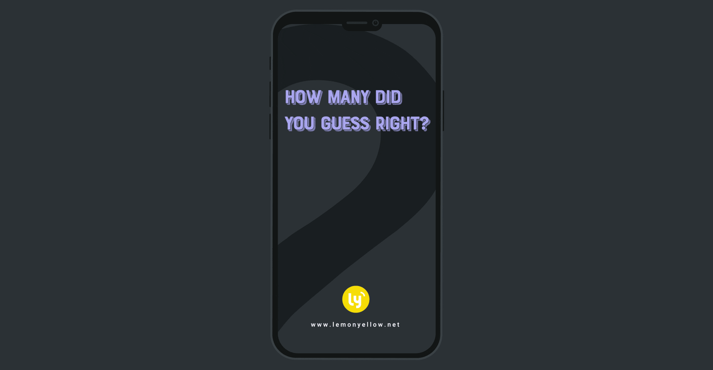
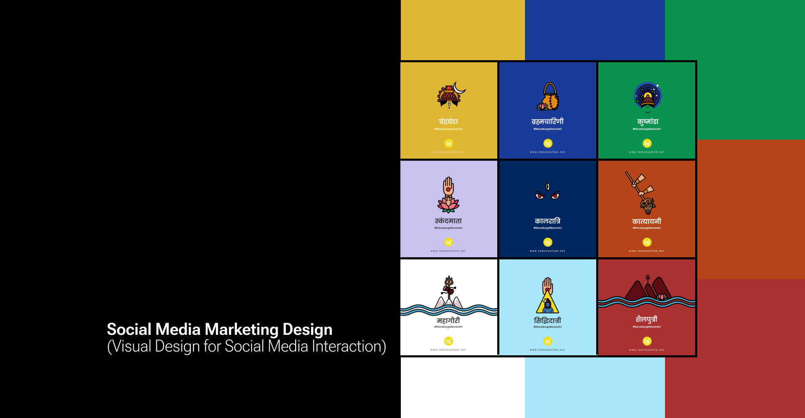
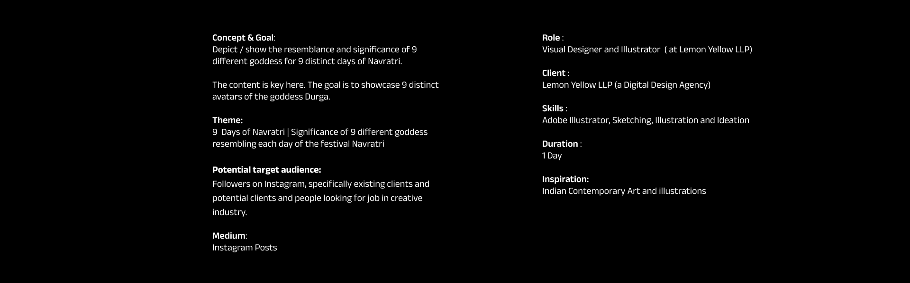
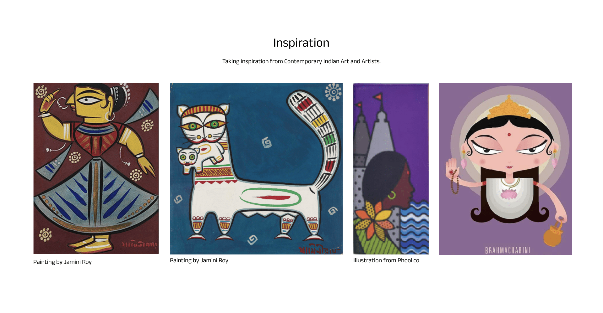
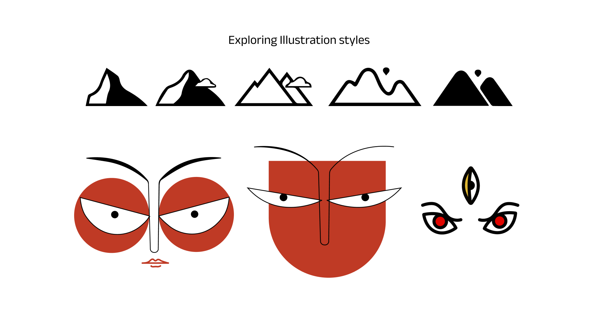

A recruiter-friendly snapshot of visual communication design work, presented through 24 visuals and built using Adobe Illustrator, Figma. The Behance project currently shows 99 views and 3 appreciations.
Quick read
Highlights
Published on Behance on July 23, 2023 and archived locally for a cleaner recruiter-facing review flow.
Includes 24 imported visual modules so hiring teams can scan the project without leaving the site.
Tools highlighted on Behance: Adobe Illustrator, Figma.
Imported gallery
Case-study visuals
Social Media Marketing Design visual 1Social Media Marketing Design visual 2Social Media Marketing Design visual 3Social Media Marketing Design visual 4Social Media Marketing Design visual 5Social Media Marketing Design visual 6

Social Media Marketing Design visual 7

Social Media Marketing Design visual 8

Social Media Marketing Design visual 9

Social Media Marketing Design visual 10

Image may contain: screenshotSocial Media Marketing Design visual 12

Social Media Marketing Design visual 13

Social Media Marketing Design visual 14Social Media Marketing Design visual 15Social Media Marketing Design visual 16

Social Media Marketing Design visual 17

Social Media Marketing Design visual 18Social Media Marketing Design visual 19